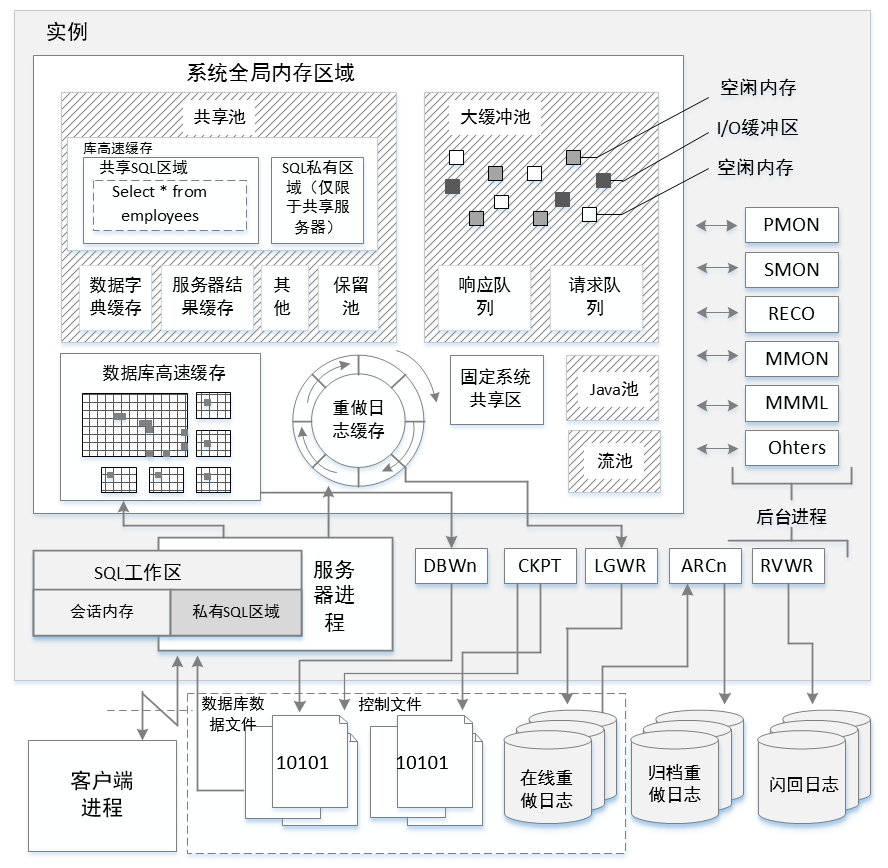

通常，“Oracle数据库”既指存储在硬盘上的内部存有数据的数据文件，也指用来管理这些数据文件的内存结构。实际上，“数据库”归属于数据文件，“实例”则归属于内存结构。
图1-1展示了oracle实例与数据库的关系。
一个实例由系统全局内存区域（System Global Area，SGA）以及一系列后台进程组成。
每个链接到数据库的用户都是通过一个客户端进程进行管理，客户端进程与服务器进程相联结，每个服务器进程都会被分配一块私有的内存区域，该区域称为程序共享内存区域或进程共享内存区域（Process Global Area，PGA）。
图1-1 实例与数据库关系图 
SGA共享池
共享池是Oracle缓存数据的地方。执行过的每一条SQL语句在共享池都存有解析后的内容。而存放这些内容的区域称为库高速缓存。在每一条SQL语句执行之前，Oracle都会查看库高速缓存中是否已存在相同的SQL语句。存在的话直接从里面读取该信息，而非再解析一遍。
共享池还存储所有Oracle数据库对象信息，存储该信息的区域称为数据字典缓存区域。
共享池内存有限，已加载的语句不能长时间存放在其中。基本思想是保留那些使用最频繁以及最近使用的语句。
库高速缓存
每一条SQL语句执行之前都将被解析并存入到库高速缓存中。解析包括验证语法，检验提及对象，确认对象用户权限。检验过后，下一个步骤就是执行软解析或者硬解析。
软解析：库高速缓存解析每一条sql，判断之前是否执行过该语句，如果是，Oracle将取回之前解析的信息并重用。
硬解析：如果该语句之前没有执行过，Oracle将执行所有工作来为当前的sql语句生成执行计划，并将其保存在缓存中以备将来重用。
由此可见，软解析效率远比硬解析效率高得多！
完全相同的语句
有三条SQL语句：
1 | SQL> select employee_id,first_name,last_name from hr.employees where department_id = 60; |
三条SQL语句的执行结果完全一致。但他们是完全一样的SQL语句么？查看V$sql视图：
1 | SQL> select sql_id,hash_value,executions from v$sql where upper(sql_text) like '%EMPLOYEES%'; |
从结果来看，这三条SQL并不一样，因为它们并不是严格一致的。完全相同的SQL语句必须 大小写字母一致，空格位置一致，注释内容位置完全一致。
可以通过绑定变量的方式来代替常量：
1 | SQL> variable v_dept number |
由此可见，库高速缓存只存储了一条语句，并执行了三次。
锁存器
Oracle只有获得了锁存器后才可以从库高速缓存或其他内存中读取信息。锁存器可以避免库高速缓存同时被两个会话修改，一个会话在读取库高速缓存信息之前，都会获得一个锁存器，另一个会话必须等到上一个会话释放锁存器。
自旋
如Oracle判断当前sql是否已经存在库高速缓存中时必须先获得锁存器，如果此时锁存器不是空闲的，Oracle会迭代轮询，查看锁存器是否可用。经过一段时间（_spin_count=2000）锁存器仍不可用的话，该请求会被暂时挂起，直到下一次获得cpu时间片。
SGA缓冲区缓存
存储数据块。块是Oracle进行操作的最小的单位，包含数据行，索引或用来排序的临时数据（也包含块自身信息）。Oracle必须读取块来获取sql需要的数据行。缓冲区块的管理也遵循LRU(Least Recently Used)原则，同时也有个叫接触计数器（touch-count）的东西，记录块被使用的次数，被访问越频繁的块存活时间越长。在验证块是否存在缓冲区缓存的过程中，也需要获得锁存器。
如果一个sql查询所需数据不在缓冲区缓存的块中，就必须读取操作系统硬盘来获取这些信息，然后存放到缓冲区缓存的块中。
逻辑读取：Oracle从缓冲区缓存块中读取数据；
物理读取：缓冲区缓存块中没有数据，Oracle从硬盘中读取数据的过程。
Eg:
1.清除共享池和缓冲区缓存（硬解析和物理读取）：
1 | SQL> alter system set events 'immediate trace name flush_cache'; |
2.仅清除缓冲区缓存（软解析和物理读取）：
1 | SQL> set autotrace off |
3.都不清除（软解析和逻辑读取）：
1 | SQL> select * from hr.employees where department_id=60; |
结果证明，当执行的查询只需要软解析和逻辑读取数据块的时候，所消耗的资源是最少的！